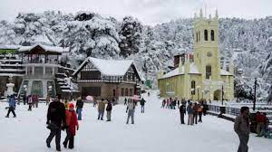

S.no |
Image |
Description |
| 1 |

|
Kashmir:-
Enclosed by the snow-clad mountains and the gleaming lakes creates a
picturesque landscape earth which is known as Kashmir.Due to the
various picturesque places to visit in Kashmir, it is often referred
as India’s Switzerland, as the place is blessed with the most scenic
views which are worth a visit.
|
| 2 |

|
Shimla:-
A wonderful abode in the Himalayas, the city of Shimla is surrounded
by scenic pine-covered hills and snow-capped peaks. Located in the
magnificent hill state of Himachal Pradesh in India, it is one of
the most popular tourist destinations in the country. From
honeymooners to adventure seekers, the city serves as a charming
retreat to a large number of people.
|
| 3 |

|
Ooty:-
Ooty, in the Southern Indian State of Karnataka, is called the
"Queen of hill stations" and is the capital of Nilgiris district. It
is one of the most popular tourist resorts in India. Nilgiris means
"Blue Mountains". It is a land of picturesque picnic spots.The
establishment of numerous tea estates made Ooty famous. Lofty
mountains, dense forest, sprawling grasslands and miles and miles of
tea gardens greet the passengers on most routes.
|
| 4 |
 |
Goa:-
Located on the Western Ghats of Konkan, Goa is known as the smallest
and the fourth smallest populated state of India. Goa is bounded by
Maharashtra to its north, eastern and southern boundaries were
formed by Karnataka, while the western coast is formed by Arabian
Sea.International and domestic tourists visit this tiny state every
year, in a large number. Tourists are attracted to its golden
beaches, architecture and places of worship.
|